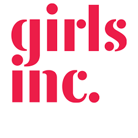

Volunteering
I am someone who greatly believes that you get out of your community what you put in, so I make it a point to volunteer as often as I can. These are some of the most notable volunteering activities I have done to date.
Girls Inc. STEM Volunteering
Girls Inc is a volunteering experience through Cyber Blue. In this volunteering experience, the robotics team visits Girls Inc and organizes several stations for the girls to experience and learn about STEM, particularly engineering and computer science. In the year 2023, there were over 60 girls in the camp, and the robotics team prepared 9 stations for the duration of two hours. The team plans for this for weeks prior, making sure the activities are enjoyable and realistic. I, personally, led a station where we controlled LEGO Verni Robots using iPads and drag and drop code. It was amazing to be able to explain the logistics behind the robots in simple terms, and seeing the girls interested in something I would have loved to experience at their age is a wonderful feeling. At Girls Inc, a majority of the girls are lower income and do not have the experiences that a lot of the kids on the team had, so it was great to be able to make that change and get them access to these things.
Rolls Royce STEM Day Volunteer
At Rolls Royce STEM Day, the robotics team was brought to the Rolls Royce Company Building to be able to share our experience with STEM with elementary schoolers. Rolls Royce offered an elementary school the opportunity to have a field trip there, and organized an event filled with STEM related activities, as well as a catered lunch. As Rolls Royce is a sponsor of Cyber Blue, not only was it amazing to share knowledge with kids, but it was amazing to see the workspace of one of our major sponsors, and see where a lot of people interested in STEM end up working. Our team brought our big robot, as well as our minibot and allowed the kids to drive and operate them. Through the process we allowed kids to ask as many questions as they wanted, encouraging them to be curious. I enjoyed this because you could almost see the click in their head as they saw what math and science could turn into in the real world. Being able to provide that connection for them is incredibly empowering, and I greatly enjoyed this experience.
Abraham Lincoln Elementary Robotics Team High School Volunteer
At Abraham Lincoln, I served as a high school volunteer for their robotics teams. As there are so many kids needing guidance on specific ideas and designs for their robots, it is incredibly important for them to get plentiful guidance as they learn new mechanisms and design ideas. As it is easy for kids to get discouraged, it was my job to reassure them that testing a design and failing is often common, and something I also have to remind myself of quite often. It is also my job to teach them new mechanisms, and ensure that they are following the rules and guidelines of the Vex IQ Robotics Competition they are designing the robot for. Ensuring that there are enough older people in the room for the kids to ask for help ensures that they get their projects done within the given time frame. Knowing that I was able to encourage kid’s creative ideas and turn them into a functional robot that they could be proud of is an amazing feeling, and I hope to continue doing this type of volunteering in the future.
Vex IQ Elementary Robotics Competition Volunteer
At the Vex IQ Competitions, I have been both a Skills Referee, and a Field Referee. I was in charge of keeping score and judging the game based on the preset rules and guidelines. Being in this position allowed me to see so many different designs that the kids and their mentors had come up with, and seeing so many different yet efficient designs allowed me to further appreciate kids’ creativity and the potential diversity when it comes to my own team’s robots. I volunteered for a total of four competitions, totaling over 40 hours. Each of these competitions brought me different experiences, however my favorite opportunity was when the competition was held in Lucas Oil Stadium. Seeing that programs like these were important enough to be held in a large building like Lucas Oil Stadium further validated my appreciativeness of these opportunities in my life.
R.A.G.E and I.R.I. Host and Co-Host Volunteer
Cyber Blue Robotics Team hosts two competitions throughout the year. Preparation and planning for these competitions require extensive hours. Organizing the attendees and planning out food and locations for things takes time and people. As our team hosts them, it is up to us to do the planning. Team lists, information folders, and other important things must be done by the team members before the date. I.R.I is an international off-season competition that hosts teams from all around the world, this is the largest off-season competition in the midwest, and it is incredibly difficult to keep everything organized. Not only do papers need organizing, but two 50 foot fields made of metal must be assembled, and this responsibility falls on the teams. I greatly appreciate being able to have these experiences, as it is a greatly unique one not a lot of people get to do. R.A.G.E is an all-girls competition that encourages, and requires, women to do all of the hard lifting. This allows girls a chance to be the majority in a STEM environment, and encourages socializing and bonding between women in STEM. Our team hosts this event. All of the field building, and organizing is done by members on our team, and it is incredibly amazing to know you are encouraging other women to get more involved in their robotics team, something I have been fighting to do since I joined.
Perry Youth Theatre High School Volunteer
Perry Youth Theatre is a program for kids ages 3rd grade to 8th grade. This is a large program that requires high school volunteers to help keep the kids on track. This program is a Theater program with a goal of directing and completing a show within a set amount of time. As a high school volunteer, I watched over a group of kids and ensured they were safe, and paying attention. Oftentimes the high school volunteers would sing and dance alongside them to lead by example. Being able to walk alongside kids as they engaged in activities that they genuinely enjoyed, and watching them step out of their comfort zone and genuinely enjoy it was amazing, as I also was a kid in this program for several years before I became a volunteer.